MANUALE DI CONFIGURAZIONE E UTILIZZO
AMONEYBPE
e AMONEYDEMAT
Stato
Utilizzato da
Redatto da RCC
Approvato da D.
Area Monetica
VERSIONING
DATA
REVISIONE
MODIFICHE APPORTATE
02/02/17
1.0
PRIMA STESURA
11/05/17
2.0
AGGIUNTA ECCEDI IMPORTO E ABILITARE CON 0 o 1
22/09/17
2.3
MODIFICHE VARIE
01/04/19
3.0
Aggiornamento alla release BPE Tetra 2.0
29/05/19
4.0
Aggiornamento alla release BPE DEMAT Tetra 2.2
01/10/19
5.0
Aggiornamento alla release AmonyBpe 2.7
Indice generale
1.Scopo e campo di applicazione
............................................................................................
5
2.AmoneyBPE
.......................................................................................................................
6
2.1.Configurazione
.........................................................................................................................
6
2.2.Modalità Standalone
.................................................................................................................
8
2.2.1.Pagamento con carta
.........................................................................................................
9
2.2.2.Pagamento con codice applicazione
...................................................................................
11
2.2.3.Storno
.............................................................................................................................
12
2.2.4.Disponibilità
.....................................................................................................................
13
2.2.5.Chiusura
..........................................................................................................................
14
2.2.6.Totali
...............................................................................................................................
14
2.2.7.Ristampa
.........................................................................................................................
14
2.2.8.About
..............................................................................................................................
14
2.3.Modalità integrata con Software di Cassa
.................................................................................
15
2.3.1.Pagamento
......................................................................................................................
15
2.3.2.Storno
.............................................................................................................................
15
2.3.3.Disponibilità
.....................................................................................................................
16
2.3.4.Chiusura
..........................................................................................................................
16
2.3.5.Totali
...............................................................................................................................
16
2.3.6.Ristampa
.........................................................................................................................
16
3.AmoneyDEMAT
................................................................................................................
17
3.1.Configurazione POS
................................................................................................................
17
3.2.Menù dematerializzazione
.......................................................................................................
17
3.2.1.Apertura sessione
.............................................................................................................
18
3.2.2.Validazione (dematerializzazione del buono pasto)
.............................................................
19
3.2.3.Storno
.............................................................................................................................
19
3.2.4.Riallineamento
.................................................................................................................
21
3.2.5.Chiusura sessione
.............................................................................................................
22
4.Pagamenti Advanced (ADV)
..............................................................................................
25
4.1.Configurazione POS
................................................................................................................
25
4.2.Inizializzazione Pagamenti ADV
................................................................................................
25
4.3.Menù Pagamenti ADV
.............................................................................................................
26
4.3.1.Pagamento
......................................................................................................................
27
4.3.2.Storno
.............................................................................................................................
30
4.3.3.Ristampa
.........................................................................................................................
31
4.3.4.Retry Esito
.......................................................................................................................
31
4.3.5.Inizializzazione
.................................................................................................................
31
4.3.6.Reset
...............................................................................................................................
31
4.3.7.Info Pagamenti
.................................................................................................................
31
5.APPENDICE A
...................................................................................................................
32
5.1.Configurazione lettore codice a barre
.......................................................................................
32
5.1.1.Modello ZEBRA LS1203
.....................................................................................................
32
5.1.2.Modello Datalogic QuickScan QD2131
................................................................................
33
5.1.3.Modello Datalogic QuickScan QD2430
................................................................................
33
Scopo e campo di applicazione
Questo documento descrive le modalità di configurazione e utilizzo delle applicazioni
AMONEYBPE e AMONEYDEMAT per POS Ingenico Tetra.
AmoneyBPE
Configurazione
Per accedere al menù di configurazione dell’applicazione AmoneyBpe:
- premere sul POS il tasto grigio
- selezionare la voce AMONEYBPE
- selezionare la voce Configurazione
- digitare la password 72619
Nel menù Configurazione è possibile impostare i seguenti parametri per la gestione dei BPE:
• RUPP: inserire il rupp corrispondente (per cancellare/modificare tasto giallo).
Premere tasto verde per salvare.
- Conn Principale: verrà richiesto di inserire:
- IP server BP: l’indirizzo IP del server VAS, completo di zeri.
- Premere tasto verde per salvare e passare alla voce successiva oppure premere tasto rosso per
- non salvare e passare alla voce successiva
◦ Port server BP: la porta del server VAS.
Varia a seconda dell’esercente ed è indicata nelle note su Amoney.
Premere tasto verde per salvare.
- Conn Backup: verrà richiesto di inserire:
- IP server BP: l’indirizzo IP di backup del server VAS, completo di zeri.
- Premere tasto verde per salvare e passare alla voce successiva oppure premere tasto rosso per
- non salvare e passare alla voce successiva
◦ Port server BP: la porta di backup del server VAS.
Varia a seconda dell’esercente ed è indicata nelle note su Amoney.
Premere tasto verde per salvare.
• Protocollo di rete: tcp/ip + ssl
• Porta ECR: se non è già inserita, inserire il valore 02571 sempre.
E’ la porta che il POS utilizza per comunicare con la cassa.
Premere tasto verde per salvare.
• Time-out: Si consiglia di impostarlo a 120, è rappresentato in secondi.
E’ il tempo che il POS aspetta per ricevere/inviare messaggi al server.
Premere tasto verde per salvare.
• Eccedi importo: si consiglia di impostarlo su OFF.
Può essere impostato con i seguenti valori:
◦ ON: in tal caso, l'importo dei buoni pasto può eccedere l'importo del pagamento, ma
solo per il numero minimo di buoni che copre l'importo,
◦ OFF: in tal caso il totale dell'importo del buono pasto deve essere minore del totale
dell'importo del pagamento.
• Standalone: se questa voce è abilitata le varie funzioni dell’AmoneyBpe possono essere
chiamate solamente da POS (vedere capitolo 8), se viene disabilitata verrà usato
solamente lo scambio importo con la cassa (vedere capitolo 14).
Selezionare la voce:
- Standalone (per utilizzare solo il pos)
- ECR (per richiamare le funzioni da cassa).
- Premere tasto verde per confermare.
NOTA: il numero massimo di buoni utilizzabili per un pagamento tiene conto sia dell’opzione
eccedi importo (ON o OFF), sia del numero massimo di BPE per transazione impostato su
Amoney.
• Demat seq code: tale voce è relativa alla funzionalità di dematerializzazione. È possibile
impostare il POS in modo che sia possibile dematerializzare un solo buono alla volta,
stampando uno scontrino per ogni buono; oppure dematerializzare una sequenza di
buoni in un unico scontrino.
Selezionare la voce:
- Scan singolo buono (uno scontrino per ogni buono)
- Scan sequenza buoni (più buoni in un unico scontrino)
- Premere tasto verde per confermare.
• Protocol ECR V2: la possibilità di abilitare il protocollo di scambio importo V2 con la
cassa è presente unicamente per i POS configurati con la voce standalone ECR.
Impostare ad OFF se non diversamente indicato dal supporto tecnico.
Può essere impostato con i seguenti valori:
- ON: in tal caso, lo scambio importo con la cassa avviene con il protocollo V2;
- OFF: in tal caso lo scambio importo con la cassa non avviene con il protocollo V2.
- Premere tasto verde per salvare e passare alla voce successiva.
• Opzioni Stampa:
Se il POS lavora in modalità standalone tutti gli scontrini vengono stampati automaticamente dal
POS. In tal caso si può impostare la stampa di una copia per il cliente.
Mentre se è abilitato lo scambio importo può essere impostato con i seguenti valori:
- Stampa su ECR: tutti gli scontrini verranno stampati dalla cassa
- Stampa su POS: gli scontrini di pagamento e disponibilità verranno stampati dal POS,
mentre quelli di chiusura e totale restano gestiti e stampati solamente da cassa.
Premere tasto verde per salvare.
Se si è selezionato Stampa su POS, sarà possibile impostare la stampa della copia dello
scontrino per il cliente.
Premere tasto verde per salvare.
• Porta SSA: la porta del server SSA. Utilizzata per i Pagamenti ADV (Satispay, Tinaba)
(Per abilitare eventualmente i Pagamenti ADV eseguire inizializzazione (paragrafo 4.2)).
Varia a seconda dell’esercente ed è indicata nelle note su Amoney.
Premere tasto verde per salvare.
Terminata la configurazione premere il tasto giallo, i dati si salveranno automaticamente.
NOTA: se viene modificata la voce standalone il POS esegue un riavvio automatico, per le altre
voci invece non occorre il riavvio.
Modalità Standalone
Se in Configurazione la voce Standalone è abilitata (per abilitare la voce standalone vedere
paragrafo 5) le funzioni dell’AmoneyBpe verranno chiamate da POS.
Premendo il tasto rosso è possibile accedere direttamente alla funzionalità di pagamento BPE.
Oppure, premendo il tasto grigio e selezionando la voce AMONEYBPE e poi la voce BPE, è
possibile accedere alle seguenti funzionalità:
- Pagamento
- Storno
- Disponibilità
- Chiusura
- Totali
- Ristampa
Pagamento con carta
Il pagamento BPE può essere innescato sul POS in due modi:
- premendo il tasto rosso oppure
- premendo il tasto grigio, selezionando la voce AMONEYBPE, la voce BPE e
- selezionando “Pagamento”.
La procedura da seguire è quindi la seguente:
1. inserire l’importo della spesa e confermare con tasto verde;
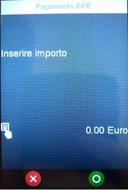
2. inserire la carta del buono pasto;
3. attendere la schermata con i blocchetti buoni pasto presenti sulla carta, per ogni
blocchetto viene mostrato l’importo e il numero di buoni residuo.
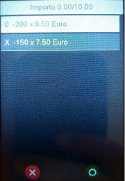
4. selezionare il blocchetto desiderato in base al numero di buoni e all’importo della spesa.
5. nella schermata successiva viene mostrato il numero massimo di buoni che si possono
utilizzare per coprire l’importo, rispettando il numero massimo di buoni pasto utilizzabile
per transazione.
Per modificare il numero di buoni, premere tasto giallo e inserire il numero di buoni desiderato,
se il numero di buoni è troppo alto viene restituito un errore ed impostato il numero massimo di
buoni spendibili.
Per confermare premere tasto verde.
NOTA: Nel caso in cui siano presente più blocchetti con lo stesso importo selezionare sempre il
primo blocchetto a partire dall’alto.
6. Per procedere al pagamento, selezionare la voce “Conferma pagamento”.
Viene quindi mostrata la cifra totale che si desidera utilizzare.
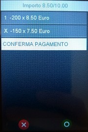
7. Per confermare premere tasto verde, per annullare premere tasto rosso.
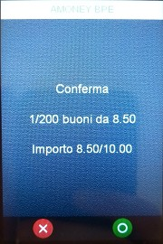
Se si preme tasto verde viene eseguita l’operazione di pagamento e al termine verrà stampato
uno scontrino.
Se si preme tasto rosso, l’operazione viene annullata.
Pagamento con codice applicazione
Il pagamento BPE può essere innescato sul POS in due modi:
- premendo il tasto rosso oppure
- premendo il tasto grigio, selezionando la voce AMONEYBPE, la voce BPE e
- selezionando la voce “Pagamento”.
Per effettuare un pagamento tramite codice applicazione va comunicato al cliente il numero di
buoni utilizzabili per il pagamento.
La procedura da seguire è quindi la seguente:
1. inserire l’importo della spesa e confermare con tasto verde;
2. premere nuovamente tasto verde e chiedere al cliente il codice fornito dalla sua
applicazione sul telefono;

3. digitare il codice fornito dal cliente sul POS e premere il tasto verde per confermare il
codice e avviare la transazione, oppure premere tasto giallo per modificare il codice o
premere il tasto rosso per annullare l’operazione.
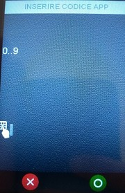
Una volta confermato, il POS procede all’esecuzione della transazione e alla stampa di uno
scontrino.
Storno
- L’operazione di storno è consentita per le seguenti modalità di pagamento ed i seguenti
- emettitori:
- pagamento tramite carta: Edenred, Repas, Yes!Ticket;
- pagamento tramite codice applicazione: Edenred, Day, CIR Bluticket, Pellegrini.
Selezionando la voce Storno, è possibile eseguire lo storno dell’ultima transazione con buoni
pasto eseguita sul POS.
Il POS richiede quindi di inserire la password 72617, premere tasto verde per confermare. Se la
password è corretta, il POS richiede di inserire la carta o di premere il tasto verde per inserire il
codice dell’applicazione del cliente.
Se la transazione è stata eseguita tramite carta BPE, sarà sufficiente inserire la tessera e
attendere la stampa dello scontrino con indicato l’esito dello storno.
Se la transazione è stata eseguita tramite codice dell’applicazione, sarà necessario premere il
tasto verde, digitare il codice inserito durante la fase di pagamento e confermare premendo
nuovamente il tasto verde. Al termine dell’operazione il POS stampa uno scontrino.
Disponibilità
Per verificare la disponibilità di buoni sulla carta selezionare dal menù Buoni Pasto la voce
Disponibilità.
A display del POS viene quindi chiesto di inserire la carta.
Una volta inserita l carta, il POS stamperà uno scontrino con il tipo e il numero di buoni ancora
disponibili.
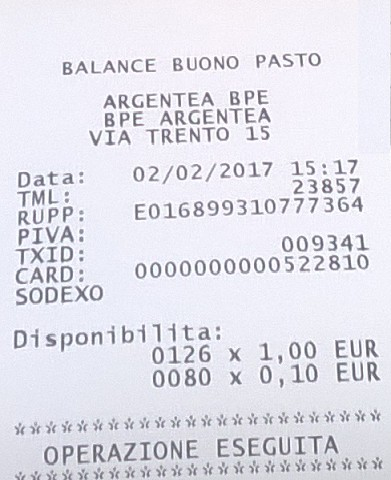
Chiusura
Selezionando la voce Chiusura, il POS stamperà, per ogni emettitore, il totale dei buoni utilizzati.
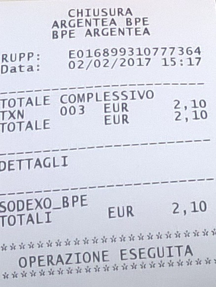
Il totale corrisponde alla somma di tutti i pagamenti dalla precedente chiusura ad ora.
Il totale verrà resettato a zero.
Totali
Selezionando la voce Totali, il POS stamperà, per ogni emettitore, il totale dei buoni utilizzati.
Il totale corrisponde alla somma di tutti i pagamenti dalla precedente chiusura ad ora.
Il totale non verrà resettato a zero.
Ristampa
Selezionando la voce Ristampa, il POS procede alla ristampa dell’ultimo scontrino, anche nel
caso di un messaggio di errore.
About
Il POS mostra la versione della release dell’AmoneyBpe.
Modalità integrata con Software di Cassa
Per poter utilizzare lo scambio importo per BPE è necessario installare per Windows la
Pagamento.dll versione 3.9.3.7, per il software Linux il Payment LIB versione 1.0.21.
Lo scambio importo viene eseguito solamente via ETH.
Le seguenti operazioni devono essere chiamate da cassa, se disponibili:
- Pagamento;
- Storno;
- Disponibilità;
- Totali;
- Chiusura;
- Ristampa.
Pagamento
Dopo aver selezionato sulla cassa il pagamento BPE, sul POS viene mostrato l’importo e
richiesto di inserire la carta o il codice fornito dall’applicazione del cliente.
Per effettuare un pagamento tramite codice applicazione va comunicato al cliente il numero di
buoni utilizzabili per il pagamento.
Il pagamento poi seguirà gli stessi passaggi del capitolo 8 per il pagamento con carta, o i
passaggi del capitolo 11 per il pagamento tramite codice applicazione, a partire dall’inserimento
della carta o del codice.
Storno
- L’operazione di storno è consentita per le seguenti modalità di pagamento ed i seguenti
- emettitori:
- pagamento tramite carta: Edenred, Repas, Yes!Ticket;
- pagamento tramite codice applicazione: Edenred, Day, CIR Bluticket, Pellegrini.
Selezionando la voce Storno, è possibile eseguire lo storno dell’ultima transazione con buoni
pasto eseguita sul POS.
A display sul POS verrà chiesto di inserire la carta o di premere il tasto verde per inserire il
codice dell’applicazione del cliente.
Se la transazione è stata eseguita tramite carta BPE, sarà sufficiente inserire la tessera e
attendere la stampa dello scontrino con indicato l’esito dello storno.
Se la transazione è stata eseguita tramite codice dell’applicazione, sarà necessario premere il
tasto verde, digitare il codice inserito durante la fase di pagamento e confermare premendo
nuovamente il tasto verde. Al termine dell’operazione la cassa stamperà uno scontrino, il POS
stamperà lo stesso scontrino solamente se è abilitato stampa da POS.
Disponibilità
Per verificare la disponibilità di buoni sulla carta selezionare la relativa voce sulla cassa.
A display sul POS verrà chiesto di inserire la carta.
Una volta inserita la carta, la cassa stamperà uno scontrino con il tipo e il numero di buoni
ancora disponibili.
Chiusura
Selezionando sulla cassa la voce dedicata, la cassa stamperà, per ogni emettitore, il totale dei
buoni utilizzati.
Il totale corrisponde alla somma di tutti i pagamenti dalla precedente chiusura ad ora.
Il totale verrà resettato a zero.
Totali
Selezionando sulla cassa la voce dedicata, il POS stamperà, per ogni emettitore, il totale dei
buoni utilizzati.
Il totale corrisponde alla somma di tutti i pagamenti dalla precedente chiusura ad ora.
Il totale non verrà resettato a zero.
Ristampa
Selezionando sulla cassa la relativa voce, la cassa procede alla ristampa dell’ultimo scontrino,
anche nel caso di un messaggio di errore.
AmoneyDEMAT
- La funzionalità di dematerializzazione dei buoni pasto è disponibile solo per i POS Tetra
- Desk5000 ed i seguenti lettori di codice a barre:
- Zebra LS1203
- Datalogic QuickScan QD2131
- Datalogic QuickScan QD2430
- Il lettore di codice a barre va connesso alla porta USB presente sul retro del POS.
Configurazione POS
Per i seguenti parametri di configurazione:
- IP server BP
- Port server BP
- IP server backup BP
- Port server backup BP
- Demat seq code
- fare riferimento al paragrafo 5.
Una volta terminata la configurazione è consigliato configurare anche il lettore di codice a barre
come indicato nell’appendice 4.1 (non è necessario riavviare il POS).
1.1.
Menù dematerializzazione
- Premendo il tasto grigio, selezionando la voce AMONEY BPE e selezionando la voce
- “Dematerializzazione” è possibile accedere alle seguenti funzionalità di dematerializzazione:
- Apertura sessione
- Validazione
- Storno
- Riallineamento
- Chiusura sessione
Premendo invece il tasto F3 o la freccia verso il basso, si può eseguire direttamente la
dematerializzazione di un buono pasto.
Per poter iniziare a dematerializzare i buoni, è necessario eseguire prima un’apertura sessione.
Inoltre, dopo ogni chiusura sessione, per poter riprendere a dematerializzare i buoni, va riaperta
la sessione.
1.1.1.
Apertura sessione
Selezionando “Apertura sessione” viene richiesta conferma all’utente di voler procedere
all’apertura di una nuova sessione.
È possibile quindi confermare con tasto verde e procedere all’apertura della sessione, oppure
annullare l’operazione premendo il tasto rosso e ritornare così al menù di dematerializzazione.
In caso di conferma, il POS inoltra la richiesta al server e visualizza l’esito della richiesta:
dopodiché tornerà al menù di dematerializzazione.
1.1.2.
Validazione (dematerializzazione del buono pasto)
Dopo aver premuto il tasto F3, oppure aver selezionato la voce “Validazione” dal menu Demat,
se la sessione è stata aperta (vedi paragrafo 3.2.1), il POS mostra la seguente schermata:
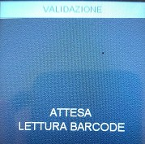
L’utente può quindi leggere il barcode con il lettore, oppure premere il tasto rosso per annullare.
Una volta letto il codice a barre, il POS procede all’invio della richiesta di validazione al server.
Viene quindi visualizzato l’esito della richiesta e stampato lo scontrino.
Se si è selezionata l’opzione “Scan sequenza buoni” sarà possibile procedere alla validazione di
un ulteriore buono, per terminare la validazione è necessario premere il tasto verde. Sullo
scontrino verrà stampato il totale dei buoni validati e verrà chiuso lo scontrino.
Se invece si è selezionata l’opzione “Scan singolo buono” il POS torna in idle o al menù e chiude
lo scontrino.
1.1.3.
Storno
Lo storno è possibile solo per l’ultimo buono validato.
Selezionando “Storno”, se la sessione è stata aperta (vedi paragrafo 17), viene richiesto
all’utente di inserire il seguente PIN 72617.

Una volta inserita la password premere tasto verde per confermare o tasto rosso per annullare.
In caso di password errata o annullata, il POS torna al menù di dematerializzazione.
Dopo l’inserimento della password corretta, viene richiesta conferma all’utente di voler
procedere allo storno dell’importo indicato.

È possibile quindi confermare con tasto verde e procedere alla lettura del buono da stornare
tramite lettore di codice a barre. Oppure annullare l’operazione premendo il tasto rosso e
ritornare così al menù di dematerializzazione.
Qualora venisse visualizzato il seguente messaggio:
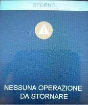
significa che il POS non ha in memoria alcuna transazione da poter stornare, perché è già stata
stornata oppure perché non è stato ancora validato nessun buono.
Una volta letto il codice a barre, il POS procede all’invio della richiesta di storno al server. Viene
quindi visualizzato l’esito della richiesta:
e stampato lo scontrino.
1.1.4.
Riallineamento
Selezionando “Riallineamento”, viene richiesta all’utente la conferma di voler procedere al
riallineamento del progressivo.
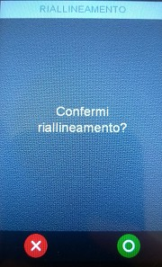
È possibile quindi confermare con tasto verde e procedere al riallineamento. Oppure annullare
l’operazione premendo il tasto rosso e ritornare così al menù di dematerializzazione.
Una volta data la conferma, il POS procede all’invio della richiesta di riallineamento al server.
Viene quindi visualizzato l’esito dell’operazione
e stampato lo scontrino riportante l’esito.
1.1.5.
Chiusura sessione
Selezionando “Chiusura sessione”, viene eseguita la chiusura della sessione:
Da quel momento in poi non sarà più possibile eseguire alcuna operazione di validazione o
storno, finché non sarà nuovamente aperta una nuova sessione (vedi paragrafo 17).
Viene quindi stampato il resoconto riportante il numero di operazioni di validazione e storno
eseguite dall’ultimo reset.
A questo punto viene richiesta all’utente la conferma di voler procedere al reset dei totali
stampati.
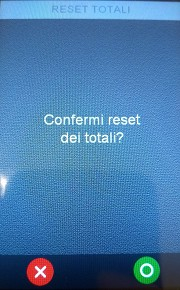
È possibile quindi confermare con tasto verde e procedere al reset, da quel momento il
conteggio delle operazioni di validazione e storno ripartirà da zero.
Oppure annullare il reset, mantenendo in memoria i totali appena stampati. Le successive
operazioni di validazione e storno della prossima sessione andranno ad incrementare quindi i
totali stampati.
Il POS torna quindi al menù di dematerializzazione.
Pagamenti Advanced (ADV)
La funzionalità di pagamenti advanced è disponibile solo per i POS Tetra con a bordo la release
AmoneyBpe 2.6 o maggiore.
I pagamenti ADV possono essere utilizzati solamente in Standalone.
Configurazione POS
Per la configurazione fare riferimento al paragrafo 5.
Utilizza i seguenti parametri di configurazione:
- rupp
- IP server BP
- IP server backup BP
- time-out
- Porta SSA
Inizializzazione Pagamenti ADV
Una volta terminata la configurazione, per abilitare il POS, è NECESSARIO eseguire
l’inizializzazione.
Seguire i seguenti passaggi:
- selezionare tasto grigio;
- selezionare AmoneyBpe;
- selezionare Pagamenti ADV;
- selezionare Inizializzazione e confermare tasto verde: se l’inizializzazione va a buon fine
- viene stampato uno scontrino in cui verranno mostrati i pagamenti abilitati.
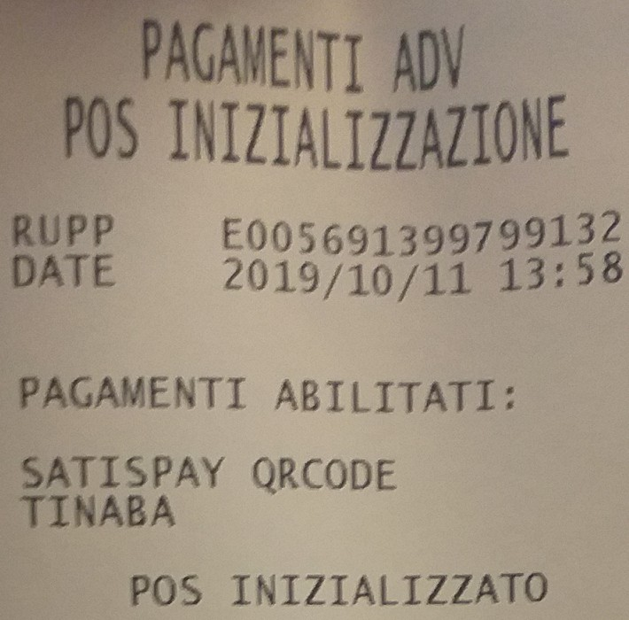
1.2.
Menù Pagamenti ADV
Premendo il tasto grigio, selezionando la voce AMONEY BPE e selezionando la voce “Pagamenti
ADV” è possibile accedere alle seguenti funzionalità:
- Pagamento
- Storno
- Ristampa
- Retry Esito
- Inizializzazione
- Reset
- Info Pagamenti
1.2.1.
Pagamento
Selezionando “Pagamento” (tasto veloce 0) verranno mostrati i servizi di pagamento abilitati
per quella cassa:
- Satispay QRCODE;
- Tinaba.
Satispay QRCODE;
Dopo aver selezionato Satispay verrà richiesto di inserire l’importo del pagamento e di
confermarlo con tasto Verde.
A video verrà mostrato un Qrcode,
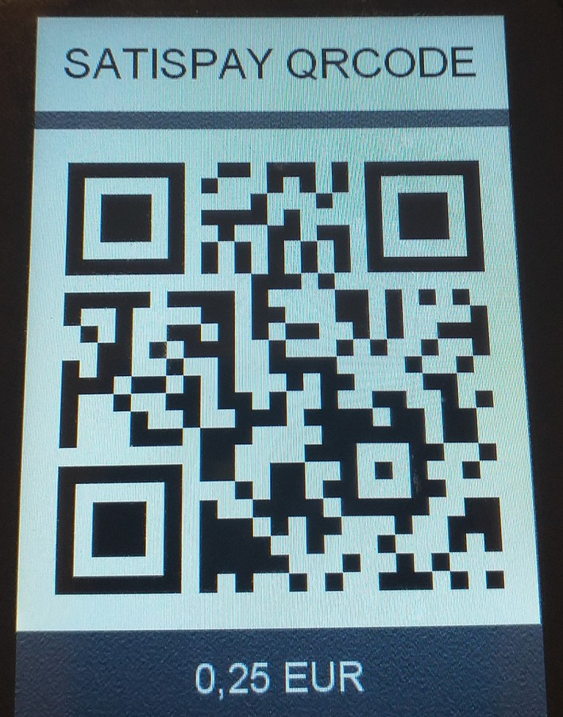
per effettuare la transazione l’utente, utilizzando l’app Satispay, dovrà scansionarlo tramite
cellulare e successivamente confermare l’importo.
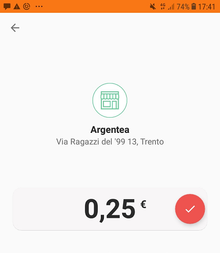
Una volta completata l’operazione verrà stampato lo scontrino.
Tinaba
Dopo aver selezionato Tinaba verrà richiesto di inserire l’importo del pagamento e di
confermarlo con tasto Verde.
Il POS mostrerà a video un Qrcode
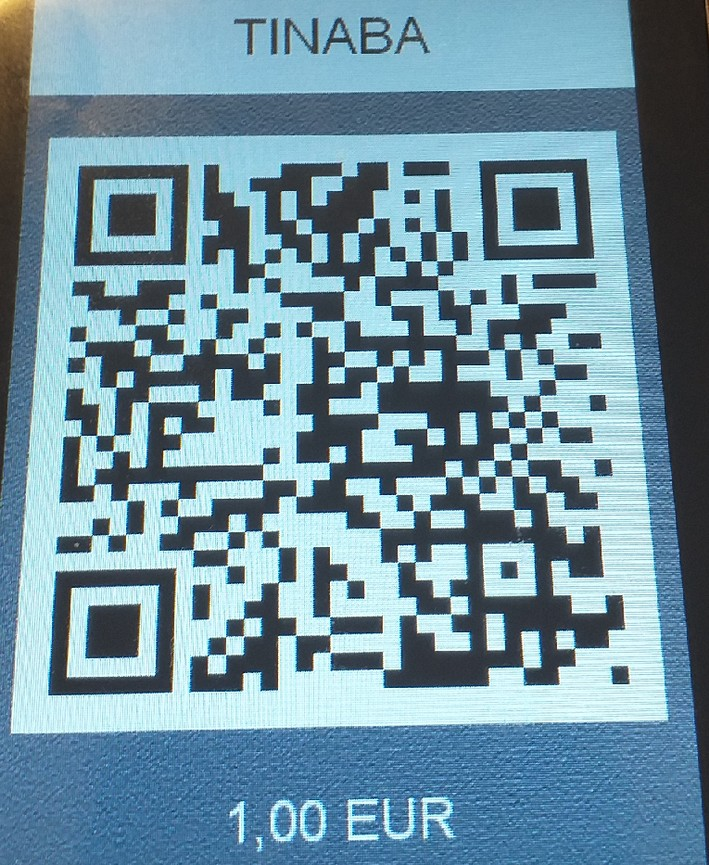
per effettuare la transazione l’utente, utilizzando l’app Tinaba, dovrà scansionarlo tramite
cellulare e successivamente confermare l’importo.
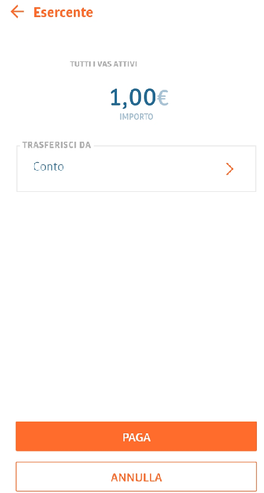
Una volta completata l’operazione verrà stampato lo scontrino.
1.2.2.
Storno
Lo storno è possibile solo per l’ultima operazione autorizzata
Selezionando “Storno”, viene richiesto all’utente di inserire il seguente PIN 72617.

Una volta inserita la password premere tasto verde per confermare.
In caso di password errata o annullata, il POS torna al menù di Pagamento ADV.
Dopo l’inserimento della password corretta, viene richiesta conferma di voler procedere allo
storno, mostrerà l’importo dell’ultima transazione autorizzata.
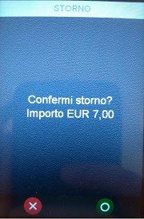
È possibile quindi confermare con tasto verde.
Il POS procede all’invio della richiesta di storno.
Viene quindi visualizzato l’esito della richiesta e stampato lo scontrino.
1.2.3.
Ristampa
Selezionando sulla cassa la relativa voce, la cassa procede alla ristampa dell’ultimo scontrino,
anche nel caso di un messaggio di errore.
1.2.4.
Retry Esito
Nel caso l’operazione di pagamento risultasse interrotta (errore di tmo, mancata connessione,
POS si spegne), selezionando Retry Esito è possibile richiedere nuovamente l’invio dell’esito.
1.2.5.
Inizializzazione
Una volta configurato il POS, è necessario inizializzarlo ai PagamentiAdv. Vedere paragrafo 4.1 e
4.2.
1.2.6.
Reset
È possibile resettare il POS, cancellando la lista di transazioni effettuate fino a quel momento.
Selezionando “reset”, viene richiesto all’utente di inserire il seguente PIN 72618.
Dopo l’inserimento della password corretta, viene richiesta conferma all’utente dell’operazioni di
reset
Una volta eseguito il reset, sarà necessario eseguire un’inizializzazione per riattivare i pagamenti
ADV.
1.2.7.
Info Pagamenti
Permette di visualizzare il tipo di PagamentiAdv abilitati.
APPENDICE A
1.3.
Configurazione lettore codice a barre
1.3.1.
Modello ZEBRA LS1203
Per configurare il lettore di codice a barre è necessario puntare ciascuno dei seguenti codici a
barre con il laser del lettore ed attendere il suono di conferma di lettura da parte del lettore:
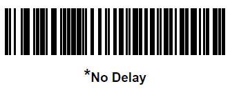
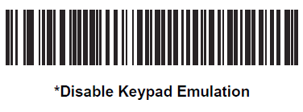
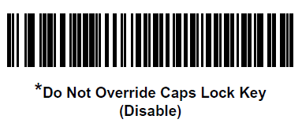
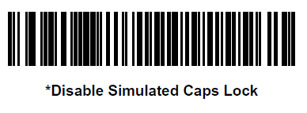
Terminata la scansione, si consiglia di riavviare il POS, lasciando connesso il barcode reader,
premendo F4 e selezionando la voce “Restart POS”.
1.3.2.
Modello Datalogic QuickScan QD2131
Per configurare il lettore di codice a barre è necessario puntare ciascuno dei seguenti codici a
barre con il laser del lettore ed attendere il suono di conferma di lettura da parte del lettore:
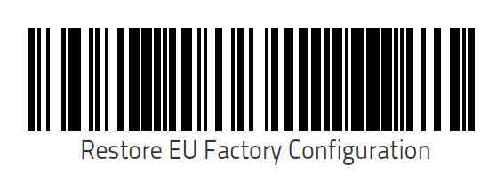
Terminata la scansione, si consiglia di riavviare il POS, lasciando connesso il barcode reader,
premendo F4 e selezionando la voce “Restart POS”.
1.3.3.
Modello Datalogic QuickScan QD2430
Per configurare il lettore di codice a barre è necessario puntare ciascuno dei seguenti codici a
barre con il laser del lettore ed attendere il suono di conferma di lettura da parte del lettore:
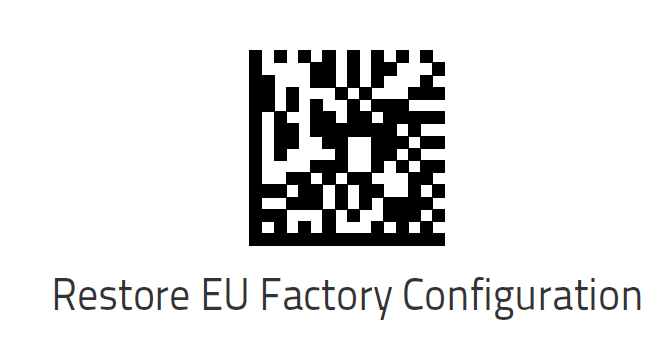
Enter
Lower case
Exit

Terminata la scansione, si consiglia di riavviare il POS, lasciando connesso il barcode reader,
premendo F4 e selezionando la voce “Restart POS”.